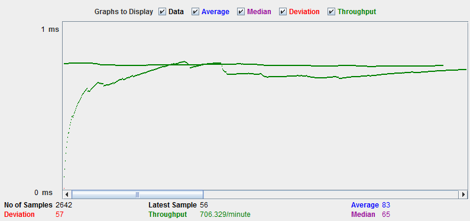
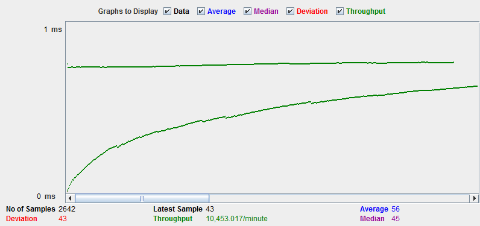
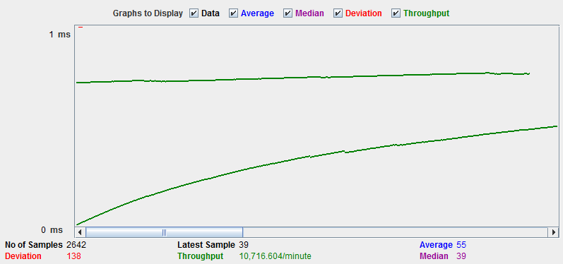
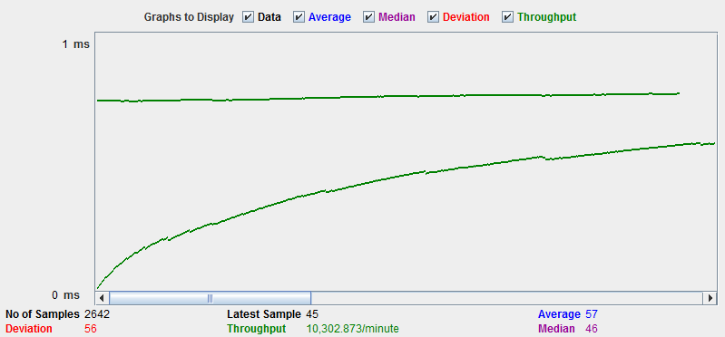
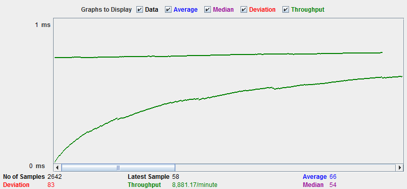
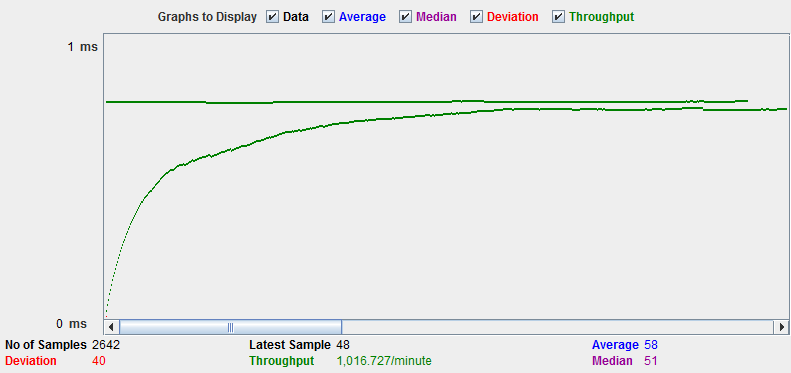
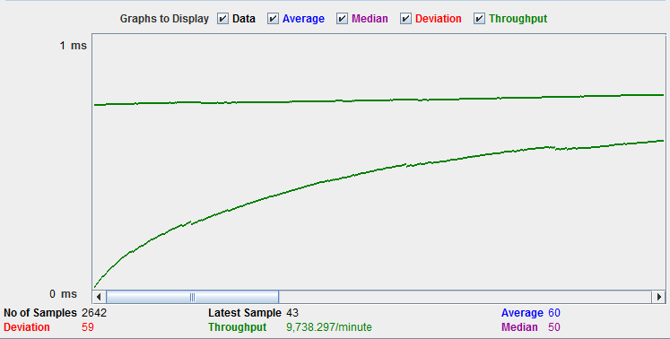
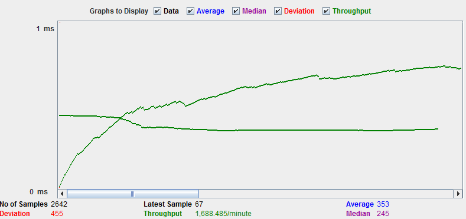
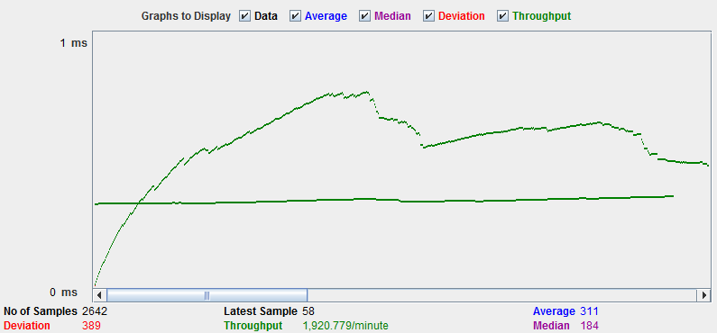

| Single-instance version cases | Graph Results Screenshot | Average Query Time(ms) | Average Search Servlet Time(ms) | Average JDBC Time(ms) | Analysis |
| Case 1: HTTP/1 thread |  | 83 | 2.04 | 1.75 | This case takes an average of 83 milliseconds to run a query, an average of 2.04 milliseconds to go through the entire search servlet, and an average of 1.75 milliseconds for JDBC execution. |
| Case 2: HTTP/10 threads |  | 56 | 1.39 | 1.28 | This case takes an average of 56 milliseconds to run a query, an average of 1.39 milliseconds to go through the entire search servlet, and an average of 1.28 milliseconds for JDBC execution. The average times could potentially be faster than 1 thread since a thread might run a little faster than another when running the search. |
| Case 3: HTTPS/10 threads |  | 55 | 1.37 | 1.26 | This case takes an average of 55 milliseconds to run a query, an average of 1.37 milliseconds to go through the entire search servlet, and an average of 1.26 milliseconds for JDBC execution. With 10 threads using HTTPS, it is pretty similar to HTTP. |
| Case 4: HTTP/10 threads/No prepared statements |  | 57 | 3.69 | 3.01 | This case takes an average of 57 milliseconds to run a query, an average of 3.69 milliseconds to go through the entire search servlet, and an average of 3.01 milliseconds for JDBC execution. Without prepared statements, the JDBC execution and search servlets require double time compared to when prepared statements are used. |
| Case 5: HTTP/10 threads/No connection pooling |  | 66 | 8.28 | 7.56 | This case takes an average of 66 milliseconds to run a query, an average of 8.28 milliseconds to go through the entire search servlet, and an average of 7.56 milliseconds for JDBC execution. It is clear that without connection pooling, the queries are all around are much slower since multiple connections cannot be handled as well all at once. |
| Scaled version cases | Graph Results Screenshot | Average Query Time(ms) | Average Search Servlet Time(ms) | Average JDBC Time(ms) | Analysis |
| Case 1: HTTP/1 thread |  | 58 | 2.19 | 1.52 | This case takes an average of 58 milliseconds to run a query, an average of 2.19 milliseconds to go through the entire search servlet, and an average of 1.52 milliseconds for JDBC execution. With the scaled version, the average query time improved from 83 to 58, so it is much faster. |
| Case 2: HTTP/10 threads |  | 60 | 2.89 | 1.53 | This case takes an average of 60 milliseconds to run a query, an average of 2.89 milliseconds to go through the entire search servlet, and an average of 1.53 milliseconds for JDBC execution. Running 10 threads with the scaled version caused the search servlet time to double because the proxy slows down the connection between the client and server. |
| Case 3: HTTP/10 threads/No prepared statements |  | 353 | 4.65 | 3.10 | This case takes an average of 353 milliseconds to run a query, an average of 4.65 milliseconds to go through the entire search servlet, and an average of 3.10 milliseconds for JDBC execution. Without prepared statements for the scaled version, the queries are slower. |
| Case 4: HTTP/10 threads/No connection pooling |  | 311 | 8.86 | 7.32 | This case takes an average of 311 milliseconds to run a query, an average of 8.86 milliseconds to go through the entire search servlet, and an average of 7.32 milliseconds for JDBC execution. Without connection pooling, even with the scaled version it takes a while to run queries because it can't handle multiple connections efficiently. Also it must go through a proxy, so it takes even longer. |